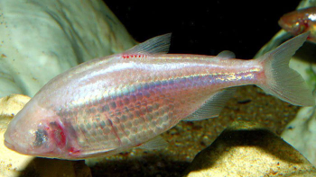

Poissons

Trichromis salvini
Côte atlantique de l'est du Mexique

Astyanax mexicanus
Grottes de Cueva Chica

Xiphophorus helleri
Sud-est du Mexique

Poecilia sphenops
Lac de Pátzcuaro
Amphibiens et crustacés

Ambystoma Mexicanum
Lacs Xochimilco et Chalco

Cambarellus patzcuarensis
Lac de Pátzcuaro